Esta publicación documenta un ejercicio completo desde la descarga hasta el análisis de la información usando software libre, de alta capacidad y confiabilidad. Esperamos que sirva de base para trabajar con muchos datos abiertos más complejos y más grandes que los que usamos en este ejemplo. Y con la noble intensión de compartir conocimiento para que haya más entusiastas en el análisis de los datos que publica Red México Abierto.
El reto es averiguar las cantidades de escuelas de educación preescolar, primaria y secundaria en nuestra ciudad.
Requerimientos
- Previamente debe tener instalado, configurado y funcionando un motor de base de datos relacional como MariaDB, PostgreSQL u otro que opere con comandos SQL. Esta guía hace uso de PostgreSQL del cual se tienen excelentes resultados con grandes cantidades de información.
- Recomiendo la suite de oficina LibreOffice la cual es software libre. Podría usar Microsoft Office, aunque no lo recomiendo por ser software privativo.
- Sistema Operativo con navegador de internet y descompresor de archivos ZIP. Tanto GNU/Linux, Windows o MacOS tienen estas herramientas. En esta guía verá imágenes de GNU/Linux y KDE como entorno gráfico.
- Buena conectividad a Internet.
Obtenga datos abiertos en datos.gob.mx
La plataforma datos.gob.mx es el sitio oficial de Datos Abiertos del Gobierno de la República. Allí se encuentra el Catálogo de Datos Abiertos que de manera gradual está incorporando todos los Datos Abiertos del Gobierno de la República. En su navegador de internet, vaya a datos.gob.mx y de clic en Explora los Datos.
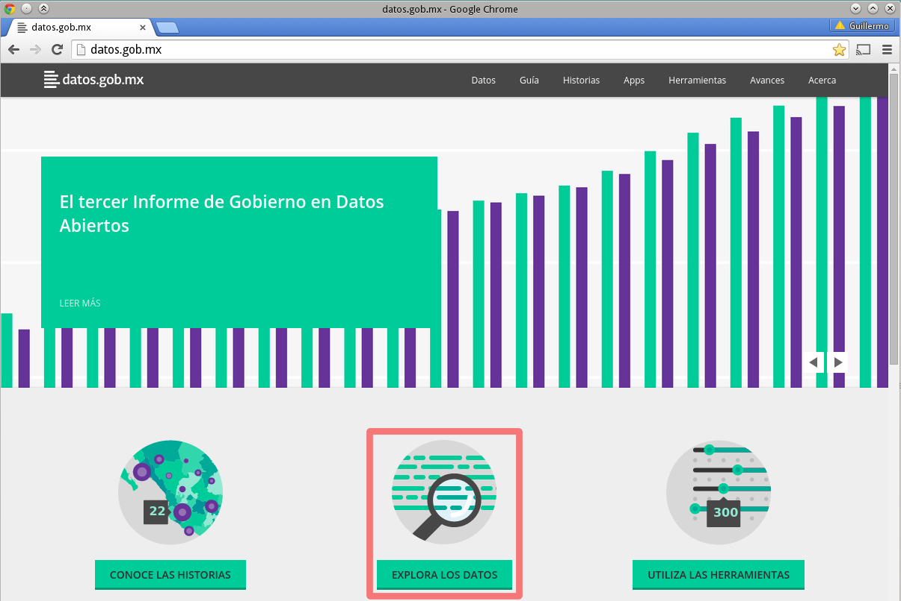
La forma más fácil de encontrar alguna información es escribir algunas palabras que la describan en el campo de búsqueda. Escriba "escuelas" y presione ENTER.
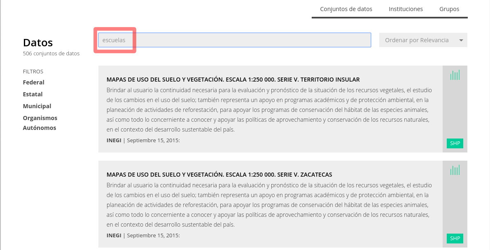
Al momento de escribir esta guía, el primer resultado es el Censo de Escuelas, Maestros y Alumnos de Educación Básica y Especial. De clic sobre este texto.
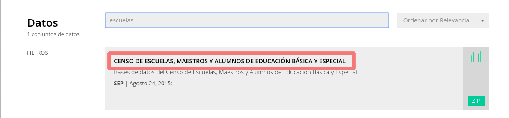
Así tendrá a la vista varios conjuntos de datos abiertos que la Secretaría de Educación Pública proporciona con la información de los centros escolares de educación básica, media superior y superior.
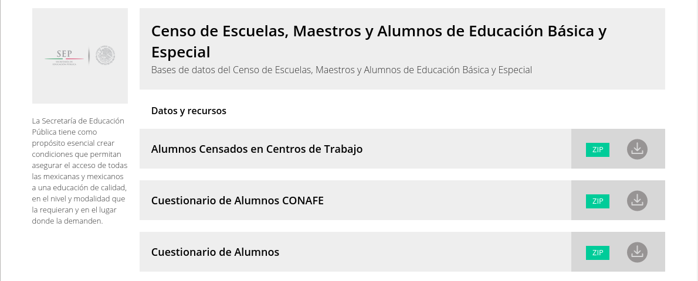
Busque en este listado el Catálogo Centros de Trabajo el cual contiene la información de los planteles educativos. De clic sobre este título y descargará un archivo ZIP llamado CATALOGO_CT.zip.

Los archivos ZIP ayudan a disminuir los tiempos de descarga. Esta reducción de tamaño es muy notable en archivos que contienen texto. De clic con el botón derecho y elija la opción para extraer o descomprimir; esta opción puede variar según su sistema operativo y la versión que use. Por lo general todos los S.O. modernos la tienen.
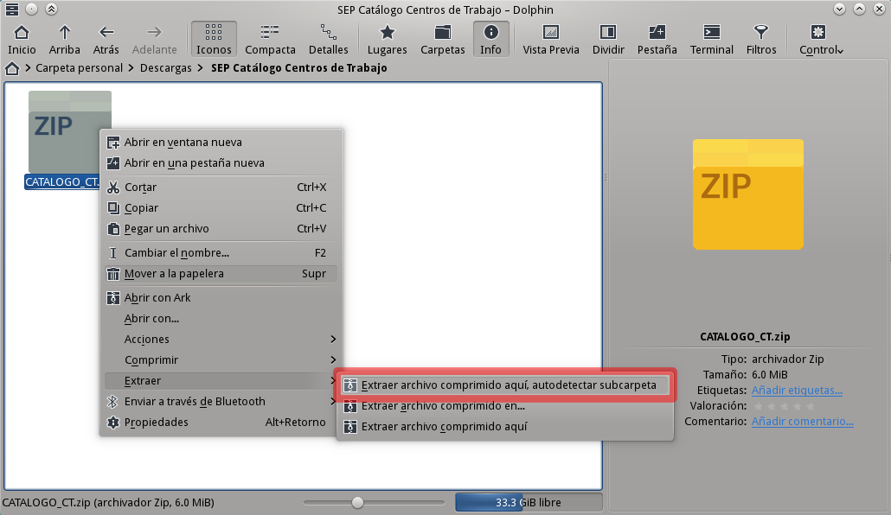
Un archivo CSV es texto separado por comas. Es uno de los tipos recomendados para publicar datos abiertos por su portabilidad y flexibilidad. Pero, debe revisar su tamaño antes de tratar de abrirlo, algunos CSV pueden pesar varios megabytes y sobrepasar las capacidades de una hoja de cálculo, como Microsoft Excel o LibreOffice. Observe que en este caso, se tiene un archivo CSV de ¡30 millones de bytes (MB) y 273,318 renglones o filas!
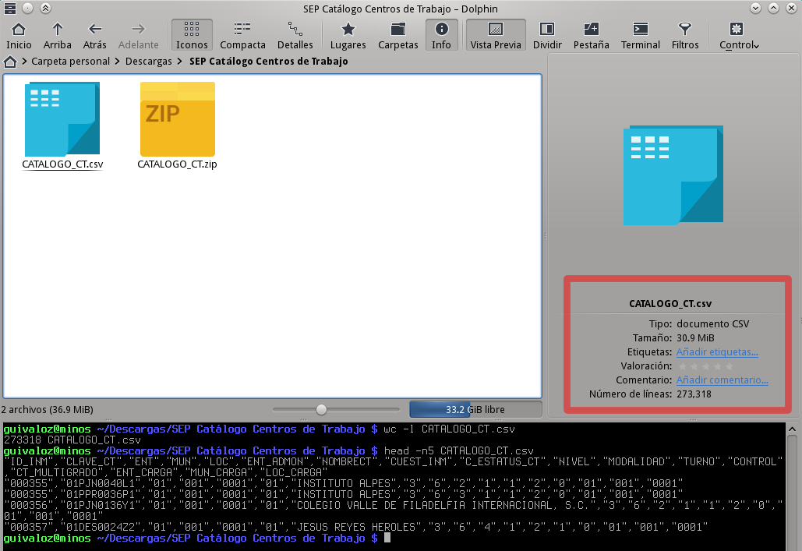
Alimente su base de datos
Cuando la cantidad o complejidad de los datos rebasen las capacidades de una hoja de cálculo, deberá utilizar una base de datos relacional como MariaDB o PostgreSQL. Estos "motores" son capaces de lidiar con miles o millones de registros con un gran desempeño y absoluta confiabilidad. Cree un archivo con nombre sep_centros_trabajos.sql y escriba este comando SQL para crear una tabla con las mismas columnas que el archivo CSV.
--
-- sep_centros_trabajos.sql
--
CREATE TABLE sep_centros_trabajos (
id_inm character(6),
clave_ct character(11),
ent character(2),
mun character(3),
loc character(4),
ent_admon character(2),
nombrect character varying,
c_estatus_ct character(1),
nivel character(1),
modalidad character(1),
turno character(1),
control character(1),
ct_multigrado character(1),
ent_carga character(2),
mun_carga character(3),
loc_carga character(4),
extra character varying
);
Tome nota que los tipos de datos de cada columna son congruentes con las líneas del archivo CSV. Por ejemplo, la columna clave_ct siempre tiene 11 caracteres, por eso se define como character(11). En alguna línea hay un dato demás que remedié agregando una columna extra como polizón.
El siguiente paso es crear una nueva base de datos con nombre sep_censo_escuelas, que con PostgreSQL se hace desde la terminal con el comando createdb. Por costumbre, le asigno que el dueño de esta base de datos sea otro usuario (previamente creado) llamado trcimplan. Este usuario no tiene privilegios mayores, lo que me asegura que si otro sistema lo toma u otro usuario se hace pasar por éste, no nos haga travesuras con las demás bases de datos.
$ createdb -O trcimplan sep_censo_escuelas
Sigue cargar el archivo sep_centros_trabajos.sql y ordenar su ejecución. Así la tabla estará lista, aunque vacía por el momento:
$ psql -U trcimplan -f sep_centros_trabajos.sql sep_censo_escuelas
Continuamos con la carga masiva de las 273,318 líneas que están en el archivo CATALOGO_CT.csv. Antes de mostrar las órdenas a escribir, revisaremos estos detalles que no hay que subestimar.
- No cualquier usuario PostgreSQL puede ejecutar el comando COPY: Porque requiere un superusuario. Como recordará, he recomendado que el dueño tenga pocos privilegios, entre los que está NO ejecutar COPY. Así que uso mi usuario habital que sí tiene dicho poder.
- La ubicación del archivo: El comando COPY de PostgreSQL es bastante quejoso cuando se le da una ruta elaborada. Así que haga una copia a una ruta corta, en mi ejemplo, a /tmp.
- La codificación de caracteres del archivo CSV: Se desearía que los datos abiertos usen UTF-8 el cual es el estándard moderno. Pero este archivo ofrecido por la S.E.P. está en el anticuado ISO 8859-1. Afortunadamente, PostgreSQL puede cambiar la codificación al cargar archivos con la orden encoding.
- Identificar el caracter que separa los datos de cada columna: Observe que se usan comas para separar los datos, inclusive los textos están entre comillas; respetando la forma en que un archivo CSV debe ser escrito.
- Si la primer línea contiene los encabezados de las columnas: Entonces no debe agregarse como un registro a la base de datos.
Con estos detalles identificados y convertidos a específicas instrucciones, realizamos la carga del archivo CSV a la base de datos. Identifique Usted mismo la función de cada pieza:
$ psql sep_censo_escuelas
sep_censo_escuelas=# \encoding LATIN1
sep_censo_escuelas=# COPY sep_centros_trabajos FROM '/tmp/CATALOGO_CT.csv' DELIMITER ',' CSV HEADER;
sep_censo_escuelas=# \q
Con LibreOffice Base podrá comunicarse con PostgreSQL
Ejecute LibreOffice Base, al aparecer la ventana del asistente, elija la opción Conectar con una base de datos existente y en el campo seleccione PostgreSQL. Luego de clic en Siguiente:
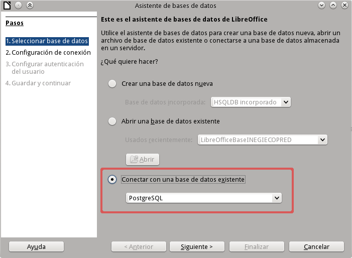
En el segundo paso LibreOffice Base le pregunta el URL del origen de datos; en este campo se establece la dirección IP del servidor con PostgreSQL y varios parámetros como el nombre de la base de datos. En este ejercicio, nuestro propio equipo tiene PostgreSQL en ejecución, así que con el texto host=127.0.0.1 le indicamos que nuestro propio equipo (127.0.0.1) la tiene. Seguido del nombre de la base de datos con dbname=sep_censo_escuelas. Escriba eso y de clic en siguiente:

De forma predeterminada, salvo que haya cambiado la configuración, PostgreSQL permite conexiones desde localhost con un usuario válido, sin revisar la contraseña. Como sugerí que trcimplan sea el dueño de sep_censo_escuelas entonces lo usamos como nombre de usuario. Habilite la casilla contraseña obligatoria y de clic en el botón Probar conexión. Pruebe con cualquier contraseña mientras no esté vacía:
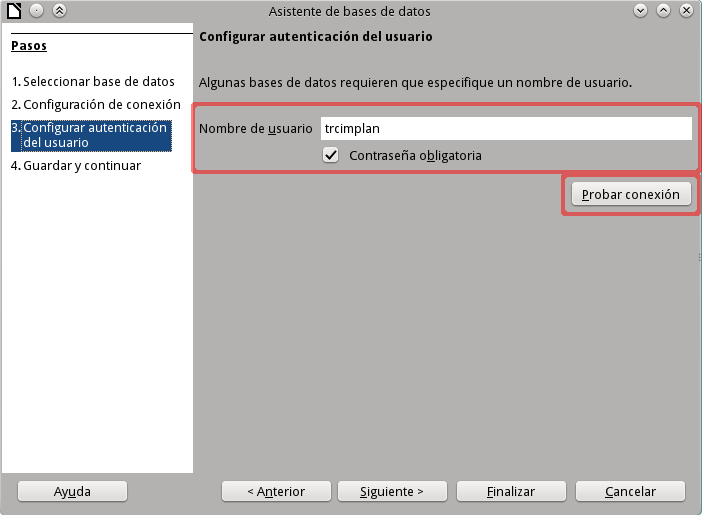
La siguiente ventana muestra que ha sido exitosa la comunicación entre LibreOffice y PostgreSQL. En caso de que falle, revise los pasos anteriores o la configuración de su servidor PostgreSQL. De estar todo bien, siga con clic en Aceptar para cerrar esta pequeña ventana y luego a Siguiente en el asistente:
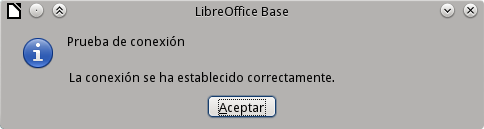
Deje la opción Sí, registrar la base de datos es para tener acceso a esta base de datos desde las otras aplicaciones de LibreOffice. Y Abrir la base de datos para su edición para hacer pruebas y nuestra primera consulta. De clic en Finalizar:
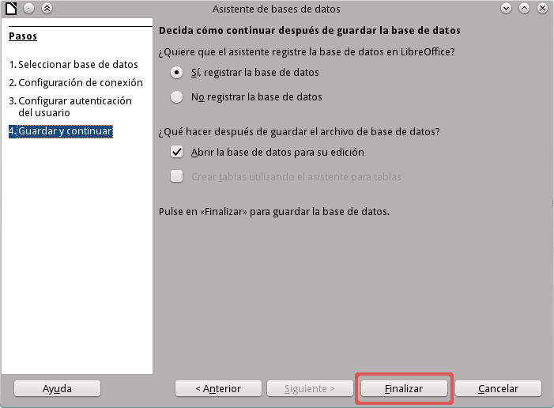
LibreOffice Base solicitará que se guarde un archivo ODB donde recordará estas configuraciones y más detalles. Este archivo NO contiene copia de los datos, ni de las hojas de cálculo que vayamos a hacer. Al abrirlo, podemos crear y modificar las consultas. Determine un nombre y un lugar en sus documentos donde guardarlo. En este ejemplo, con el nombre SEP Censo Escuelas.odb:

Tendremos a la vista el apartado de Tablas. A modo de prueba, podemos visualizar los datos al elegir la carpeta public y dar doble clic en sep_centros_trabajos:
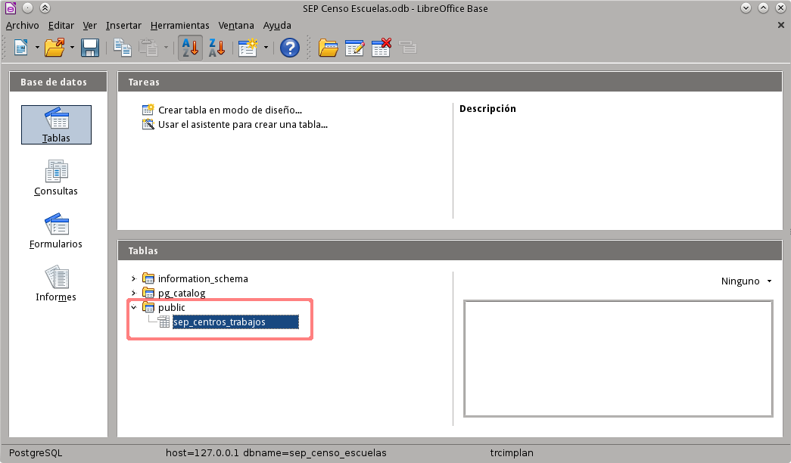
Esta segunda ventana nos muestra los primeros registros de todos los contenidos en la tabla sep_centros_trabajos. Tenga en mente que la tabla contiene TODOS los centros de trabajo del país; por lo que necesitamos buscar la forma de filtrarla para tener sólo los registros de nuestra ciudad.

Identifique que hay columnas para la entidad con ent, el municipio con mun y la localidad con loc. Use el Catálogo Único de Claves del INEGI para averiguar los números que identifican a su estado, municipio y localidad. Para nuestro ejercicio, Coahuila de Zaragoza es 05, Municipio de Torreón es 035 y la localidad de Torreón es 0001.
Filtrar los datos
De clic en el icono Consultas del lado derecho y luego en Crear consulta en modo diseño para usar un asistente gráfico. Si domina el uso de comandos SQL puede optar por Crear una consulta en modo SQL:
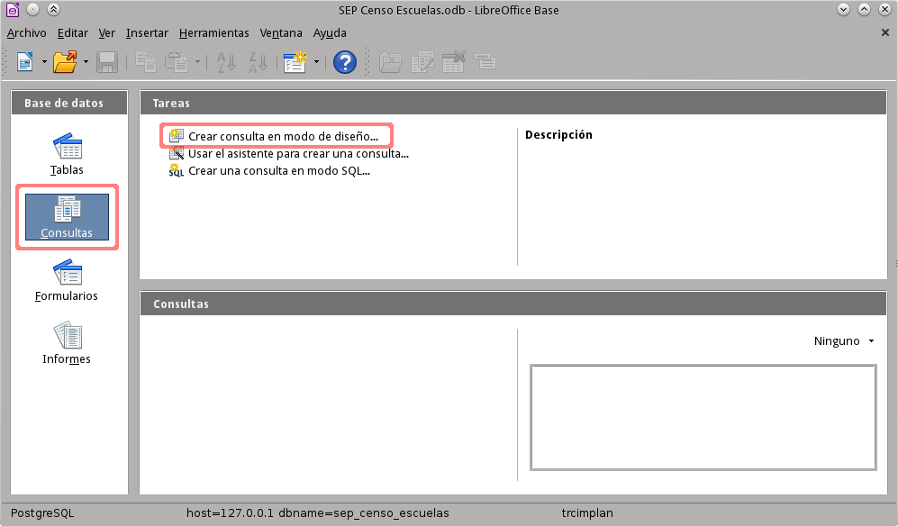
El asistente le solicita que agregue por lo menos una tabla. En otro caso, cuando quiere hacer una consulta con dos o más tablas, este asistente permite agregarlas, respetando las relaciones entre ellas. Agregue la tabla sep_centros_trabajos del esquema public.
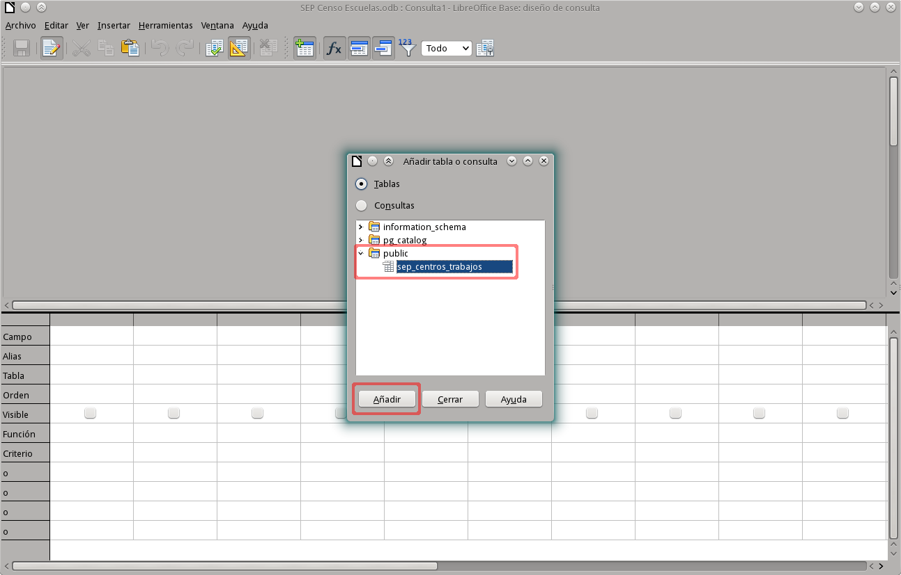
Arrastre las columnas ent, mun, loc, clave_ct y nombrect desde la tabla hasta las columnas de la parte inferior; también funciona dando doble clic al nombre de la columna en la tabla. En el renglón Criterio se escribe el valor por el que se quiere filtrar una o varias columnas. Escriba '05' (Coahuila de Zaragoza) en ent, '035' (Municipio Torreón) en mun y '0001' (Localidad Torreón) en loc. Defina el orden como ascendente en clave_ct y en nombrect. Presione el botón que ejecuta la consulta y revise que los registros entregados sean los que los filtros dejen pasar. Guarde la consulta como SEP Centros Trabajos Torreón:
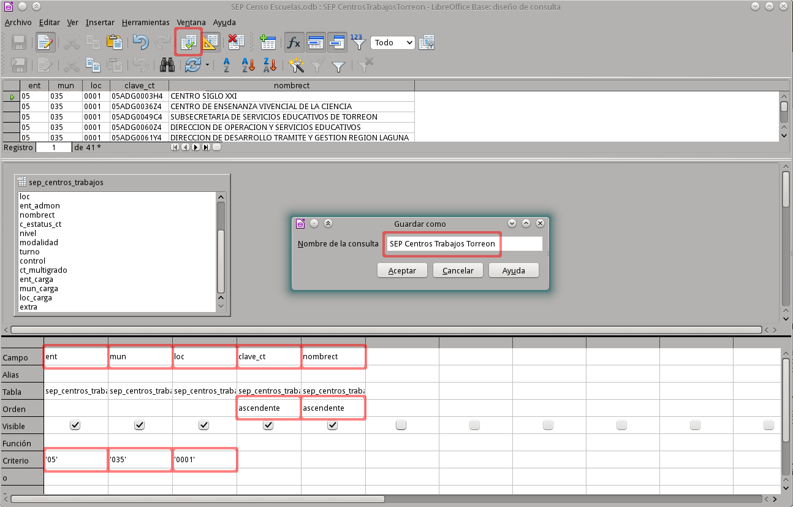
Corra LibreOffice Calc y en una nueva hoja de cálculo presione F4 (o en el menú Ver elija Orígenes de datos) para que aparezca las conexiones que Base ha establecido. Despliegue SEP Censo Escuelas, luego Consultas y de clic en SEP Centros Trabajos Torreón. Una vista previa de los datos aparece del lado derecho. Arrastre SEP Centros Trabajos Torreón y deje caer en la celda A1 para que todos los datos de la consulta se pasen a la hoja de cálculo.
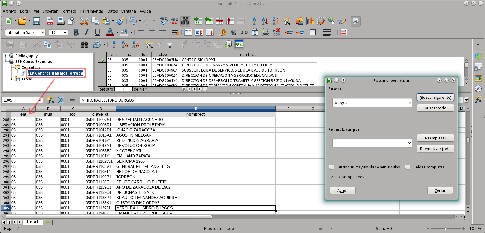
Un buen tip es que estas celdas se quedan relacionadas con la consulta externa. Así cuando haya habido cambios en la Base de Datos, puede actualizar con el menú Datos y la opción Actualizar área.
Filtrar por tipo de centro de trabajo
Regrese a LibreOffice Base y al apartado de Consultas. Para aprovechar la consulta que se tiene como base para nuevas, de clic con del botón derecho en SEP Centros Trabajos Torreón y elija en el menú contextual Editar:
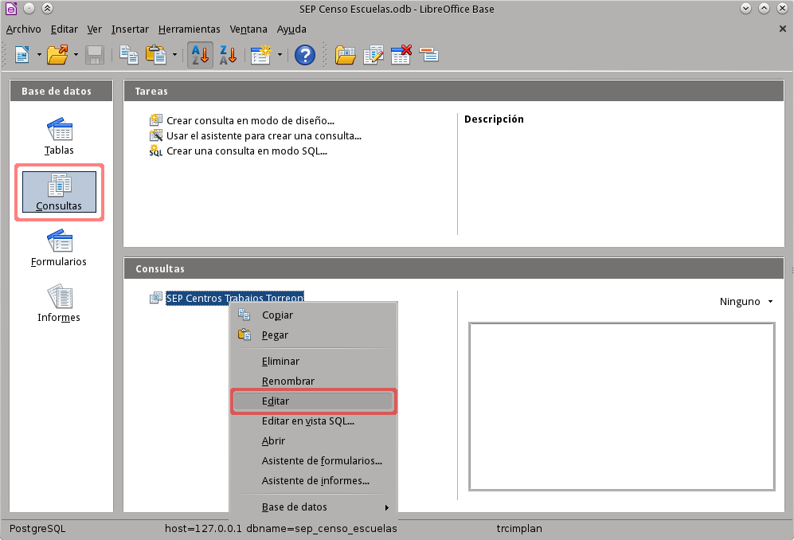
Según el Glosario de Términos Utilizados, la Clave del Centro de Trabajo clave_ct está formada por:
- Dos números para la entidad federativa, desde 01 para Aguascalientes hasta 32 para Zacatecas.
- Una letra clasificadora de acuerdo con la naturaleza del financimiento: D Federal, E Estatal y K Conafe
- Dos letras para clasificar los diferentes tipos, nieveles y servicios:
- CC Escuela de Educación Preescolar Indígena
- JN Escuela de Educación Preescolar
- PB Escuela de Educación Primaria Indígena
- PR Escuela de Educación Primaria
- ES Escuela de Educación Secundaria General
- ST Escuela de Educación Secundaria Técnica
- TV Telesecundaria
- Un número progresivo de hasta cuatro caracteres.
- Un caracter verificador.
Entonces, para filtrar sólo las claves para Preescolar escriba en el campo Criterio el filtro LIKE '???JN*'. Éste indica que los primeros tres caracteres pueden ser cualquiera, que el cuarto y quinto sean JN, seguido por lo que sea. Guarde esta consulta con otro nombre, vaya a Archivo y elija Guardar como, nómbrelo SEP Centros Trabajos Torreón Preescolar:
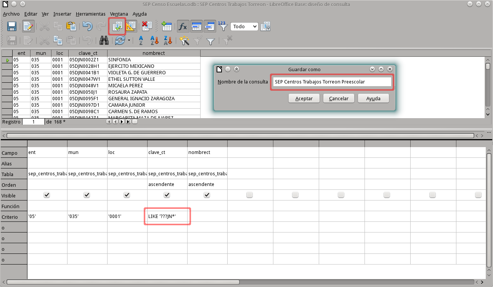
Repita estas acciones para crear consultas que filtren por PR Primaria, ES Secundaria General y ST Secundaria Técnica.
Vaya a LibreOffice Calc e importe los datos de estas cuatro consultas a un libro, donde cada consulta vaya en una hoja; nombre las hojas Preescolar, Primarias, Secundarias y Secundarias Técnicas respectivamente:
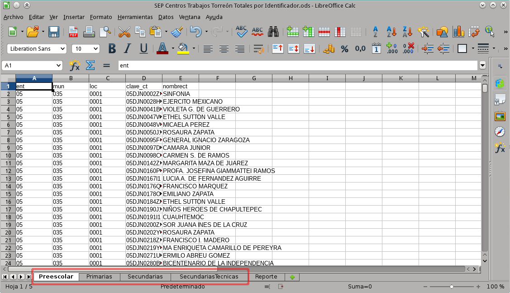
En otra hoja, llamada Reporte, vamos a contabilizar y graficar las escuelas por su tipo. La función CONTAR.SI de LibreOffice Calc sirve para contar las celdas que cumplen una condición; en nuestro ejemplo, la usamos para contar las celdas en la columna A que tienen el texto 05:
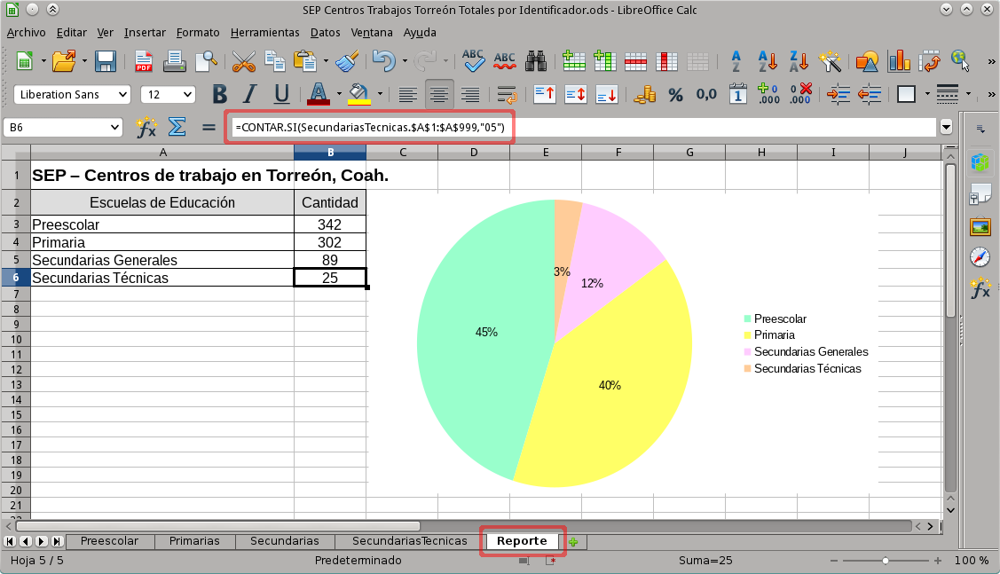
Reflexiones
La información puede ser inmensamente poderosa para comprender y dirigir los complejos problemas sociales. Para lograr este objetivo, no sólo se necesitan los datos correctos, también la gente correcta que sea capaz de obtener los números esenciales; aquellos que apunten a los detalles técnicos críticos y den soporte a las decisiones más importantes.
Quien aspire a ser un Científico de Datos deberá dominar no sólo una, sino un gran número de herramientas; que usará como un hipotético MacGyver quien con lo que tenga "a la mano", sea capaz de "atrapar" a la solución del problema que enfrente.
En próximas entregas seguiermos ejercitando y explorando nuevas formas de alcanzar estos objetivos.